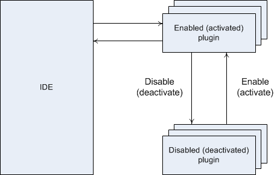

Plugins Tutorial
Codimension Plugins
Intro
In this tutorial two major topics are discussed. The first part discusses how plugin support is implemented in Codimension. The second part discusses implementation of a simple plugin and what is available for plugins.
Plugin Support Implementation
The shortest answer on the question "what is a Codimension plugin?" is as follows: a Codimension plugin is a Python class implemented in a certain way. Codimension is written in Python and thus its plugins should also be written in Python.
Before the implementation details are discussed it makes sense to introduce a few terms Codimension uses while it works with plugins.
At the start time Codimension looks for plugins in two places. The first one
is /usr/share/codimension-plugins/. The second one is the directory called
.codimension/plugins located in the user home directory. So on Linux system
the latter most probably will be ~/.codimension/plugins. It is highly
recommended that each plugin occupies a designated directory where it keeps all the
required files. So on a certain system the related directories structure may look as
follows:
/usr/share/codimension-plugins/plugin1/...
plugin2/...
plugin3/...
/home/mike/.codimension/plugins/plugin4/...
plugin5/...
plugin6/...
Depending on a plugin location Codimension splits all the found plugins into two groups:
system wide plugins and user plugins.
So in the example above plugin1, plugin2 and
plugin3 are system wide plugins while
plugin4, plugin5 and plugin6 are
user plugins.
The next pieces which are important for Codimension are a plugin name and a plugin version. A name and a version are stored in a plugin description file (it will be discussed later). That description file is what triggers loading a plugin.
The next important piece is that each plugin can be enabled or disabled (a pair of other terms activated/deactivated is also used further with the same meaning). While loading plugins Codimension initially treats all plugins enabled so a newly installed plugin will be automatically enabled next time Codimension starts. It is possible however that a plugin conflicts with another plugin. Certain types of conflicts can be detected by Codimension automatically and Codimension can disable some plugins to resolve a conflict. The following rules are used for automatic conflict resolution:
- If there is a user and a system wide plugin with the same name then the user plugin wins.
- If there are two plugins with the same name and both of them are either user or system wide then their versions are taken into consideration. The higher version wins.
- If names, versions and locations of two plugins match then an arbitrary one wins.
There are a few other cases when Codimension disables a plugin automatically. A good example of such a case is when a plugin does not implement the required interface.
An important detail on the plugin initialization stage is that regardless whether a plugin is enabled or disabled it is instantiated. The plugin class instance will stay in memory till Codimension is closed.
The user is always able to enable or disable plugins manually and in particular resolve detected conflicts the required way if automatic resolution is not what is needed. The manual control of plugin states is done in the plugin manager. The manager user interface is available via main menu Options->Plugin Manager menu item as shown below.

Figure 1. Plugin Manager
Each plugin can move between the enabled and disabled state an arbitrary number of times within a single Codimension session. This could be illustrated as follows.
Figure 2. Plugin States
The last term Codimension introduces for plugins is a plugin category. Plugins could require different support on the IDE side and a plugin category is the way how to distinguish the required support. For example, a spell checker plugin might need certain support targeted to text editing while a plugin which implements a regular expression visual testing facility does not need text editing support at all. A plugin category defines an interface variation between Codimension and a plugin. The categories come in a form of predefined base classes and each plugin must derive from one of them.
Plugin Files
As it was mentioned above it is highly recommended that a plugin occupies a designated directory. For example, directory content for a plugin may look as follows:
/home/mike/.codimension/plugins/pdfexporter/pdfexporter.cdmp
__init__.py
util_functions.py
config_dialog.py
The pdfexporter.cdmp file contains a textual plugin description. The name
of the file does not matter, Codimension looks for the .cdmp file extensions. A content
of the pdfexporter.cdmp file may be similar to the following.
[Core]
Name = PDF exporter
Module = .
[Documentation]
Author = Mike Slartibartfast
Version = 1.0.0
Website = http://mike.slartibartfast.homelinux.com/pdfexporter
Description = Codimension PDF exporter plugin
License = GPL v.3
The [Core].Name value is an arbitrary string however it is better to keep
it relatively short. The [Core].Module value is a directory path where
Codimension plugin resides. It is recommended that all the plugin files are sitting in
a designated directory including the plugin description file and therefore the
[Core].Module value refers to the very directory it is sitting in.
The '.' value is the recommended value for all the Codimension plugins.
The [Documentation] section has self explanatory values. A plugin can add
any values to this section and all of them will be displayed in the Detailed information
box in the plugin manager dialog when a plugin is selected.
The __init__.py file is the one where a plugin class definition must reside.
In the example above the plugin also has some utility functions in the
util_functions.py and a configuration dialog in separate files. To import
util_functions and config_dialog modules in
__init__.py there is no need to use relative imports.
The __init__.py can simply use:
# The plugin modules do not require relative import
import config_dialog
from util_functions import designCoastline
The Codimension modules are also available for the plugin code. So a plugin can use statements similar to the following:
# Importing pixmaps cache from a Codimension module
from utils.pixmapcache import PixmapCache
codimensionLogo = PixmapCache().getPixmap( 'logo.png' )
It was mentioned in the previous section that a plugin class must derive from one of the predefined plugin category base class. So a part of the PDF exporter plugin class hierarchy may look as follows:

Figure 3. Plugin Base Classes
The PDFExporterPlugin class must reside in the __init__.py file.
This is the class which implements the plugin interface. The plugin developer does not need
and should not make any changes in any other classes shown on the diagram.
The WizardInterface class is a Codimension provided plugin category base class.
The class is defined in codimension/src/plugins/categories/wizardiface.py. The class
has a set of member functions some of which have to be implemented by the plugin of this category.
The member function documentation strings describe in details what is expected by Codimension.
At the time of writing (Codimension v.3.0.0) there are two categories supported:
- Generic plugin category (
WizardInterface) - Version control system category (
VersionControlSystemInterface)
codimension/src/plugins/categories/ directory.
The CDMPluginBase class is a Codimension provided convenience class which simplifies
access to the major IDE objects. The class definition resides in the
codimension/src/plugins/categories/cdmpluginbase.py file.
Having CDMPluginBase class in the hierarchy makes it possible for a plugin class to use
simple to read statements similar to the following:
if self.ide.project.isLoaded():
# The ide has a project loaded
...
else:
# There is no project, the user edits individual files
...
Access to all the IDE objects should start with:
self.ide. ...
See the IDEAccess class in the codimension/src/plugins/categories/cdmpluginbase.py
file for a full list of provided IDE objects.
Codimension uses thirdparty library called yapsy to build plugin support on top of it.
Yapsy needs to have IPlugin in the plugin class hierarchy and so it is here.
A plugin developer should not need to deal with this class directly however.
The QObject class is a PyQt provided class. The class is included into
the hierarchy for convenience. Codimension uses QT library for the user interface and therefore QT
signals are used quite often. Having QObject in the base gives a convenient way to
subscribe for signals and to emit them, e.g. a plugin may have the following code:
self.ide.project.projectChanged.connect( self.__onProjectChanged )
Plugin Example: Garbage Collector Plugin
The idea of an example plugin is quite simple. The Python garbage collector triggers objects
collection at pretty much unknown moments and the plugin will make it more predictable. The garbage
collector plugin (GC plugin) will call the collect() method of
the gc Python module when:
- a tab is closed
- a project is changed
- new files appeared in a project
- some files are deleted from a project
The gc.collect() call provides an information of how many objects were
collected and this could be interesting to see. So a message should be shown somewhere.
To make it more user friendly the GC plugin should provide a configuration dialog with options
where to show the message:
- in the log tab
- on the status bar
- do not show anything
The selected option should be memorized and restored the next time Codimension starts.
Having the requirements at hand let's start implementing the GC plugin with creating a directory where all the plugin files will be located.
$ mkdir garbagecollector
$ cd garbagecollector
First, we need the plugin description file, let's call it garbagecollector.cdmp.
The content of the file will be as follows:
[Core]
Name = Garbage collector
Module = .
[Documentation]
Author = Sergey Satskiy
Version = 1.0.0
Website = http://satsky.spb.ru/codimension
Description = Codimension garbage collector plugin
License = GPL v.3
The GC plugin will belong to the wizard plugin category so it must derive from the
WizardInterface class. The definition of the class must be in
the __init__.py file:
from plugins.categories.wizardiface import WizardInterface
class GCPlugin( WizardInterface ):
def __init__( self ):
WizardInterface.__init__( self )
return
Codimension instantiates all the found plugins regardless whether they are activated or not.
So the GC plugin __init__ does not do any significant resource consuming initializations.
One of the first things Codimension does before a plugin is acivated, it asks the plugin if the current IDE version is supported by the plugin. Codimension passes the current version as a string, e.g. "2.1.0". The method must be implemented by the plugin and for the GC plugin it is trivial, all the versions are supported:
@staticmethod
def isIDEVersionCompatible( ideVersion ):
return True
The next pair of methods which must be implemented in a plugin is activate
and deactivate. Obviously, the activate method will be called when
a plugin is activated. It may happened at the start time automatically or when a user
activates previously deactivated plugin. Therefore it is generally a good idea to have
plugin data allocated and deallocated in these two methods respectively.
The first thing to be done in the activate method is to call activate of
the interface base class. If this call is forgotten then self.ide. statements
will not work at all and the plugin management system may also be confused. Respectively,
the deactivate method should call deactivate of the interface base
class as the last thing to do.
The GC plugin initialization is basically connecting a few IDE signals with the plugin member functions. When the plugin is deactivated the signals should be disconnected.
def activate( self, ideSettings, ideGlobalData ):
WizardInterface.activate( self, ideSettings, ideGlobalData )
self.connect( self.ide.editorsManager, SIGNAL( 'tabClosed' ),
self.__collectGarbage )
self.connect( self.ide.project, SIGNAL( 'projectChanged' ),
self.__collectGarbage )
return
def deactivate( self ):
self.disconnect( self.ide.project, SIGNAL( 'projectChanged' ),
self.__collectGarbage )
self.disconnect( self.ide.editorsManager, SIGNAL( 'tabClosed' ),
self.__collectGarbage )
WizardInterface.deactivate( self )
return
The GC plugin needs some configuring. The user should be able to instruct the plugin where the garbage collection information should be displayed. Configuration dialog is going to be a modal graphics one with three radio buttons:

Figure 4. GC Plugin Configuration Dialog
Let's place the dialog code into a separate file configdlg.py. Three integer
constants will be defined in the file as well. These constants identify the GC plugin information
message destination.
Codimension provides a unified way to call plugin configuration dialogs. Look at the plugin manager screenshot above. There is a button with a wrench on it for each found plugin. If a plugin needs configuring then its button will be enabled.
In order to tell Codimension if a plugin needs configuring there is an interface method which
should return a python callable or None if no configuring is required.
The GC plugin needs configuring so the implementation will look as follows:
from configdlg import GCPluginConfigDialog
# ...
def getConfigFunction( self ):
return self.configure
def configure( self ):
dlg = GCPluginConfigDialog( ... ) # Will be discussed below
if dlg.exec_() == QDialog.Accepted:
# Will be discussed below
pass
return
The user choice should be stored to be used next time Codimension starts. There are many
options how to do it and only one of them is considered here. The user choice will be
stored in file gc.plugin.conf which uses an industry standard ini files format.
Where to keep this file? The plugin message destination choice does not depend on a project
so it does not make sense to store gc.plugin.conf in a project specific data
directory. It makes sense to store the file where IDE stores its settings. We'll need a few
member functions to deal with the user choice and one member variable. The member variable
will be initialized in the plugin class constructor with "do not show anything".
import ConfigParser
class GCPlugin( WizardInterface ):
def __init__( self ):
WizardInterface.__init__( self )
self.__where = GCPluginConfigDialog.SILENT
return
def __getConfigFile( self ):
return self.ide.settingsDir + 'gc.plugin.conf'
def __getConfiguredWhere( self ):
try:
config = ConfigParser.ConfigParser()
config.read( [ self.__getConfigFile() ] )
value = int( config.get( 'general', 'where' ) )
if value < GCPluginConfigDialog.SILENT or \
value > GCPluginConfigDialog.LOG:
return GCPluginConfigDialog.SILENT
return value
except:
return GCPluginConfigDialog.SILENT
def __saveConfiguredWhere( self ):
try:
f = open( self.__getConfigFile(), 'w' )
f.write( '# Autogenerated GC plugin config file\n'
'[general]\n'
'where=' + str( self.__where ) + '\n' )
f.close()
except:
pass
At the time of the plugin activation the saved value should be restored so we need to insert into the activate method (after initializing the plugin base class) the following:
self.__where = self.__getConfiguredWhere()
Now we can complete implementation of the configuration function:
def configure( self ):
dlg = GCPluginConfigDialog( self.__where )
if dlg.exec_() == QDialog.Accepted:
newWhere = dlg.getCheckedOption()
if newWhere != self.__where:
self.__where = newWhere
self.__saveConfiguredWhere()
return
Having the destination of the information message at hand we can implement
the __collectGarbage method:
import logging
# ...
def __collectGarbage( self, ignored = None ):
iterCount = 0
collected = 0
currentCollected = gc.collect()
while currentCollected > 0:
iterCount += 1
collected += currentCollected
currentCollected = gc.collect()
if self.__where == GCPluginConfigDialog.SILENT:
return
message = "Collected " + str( collected ) + " objects in " + \
str( iterCount ) + " iteration(s)"
if self.__where == GCPluginConfigDialog.STATUS_BAR:
# Display it for 5 seconds
self.ide.showStatusBarMessage( message, 5000 )
else:
logging.info( message )
return
The last piece we need to discuss is menus. Codimension provides four convenient places where a plugin can inject its menu items:
- Main menu. If a plugin provides a main menu item then it is shown in the Codimension main menu under the plugin manager menu item. The name of the plugin menu item is set by default to the plugin name from the description file however the plugin can change it.
- Editing buffer context menu. If a plugin provides an editing buffer context menu then it is shown at the bottom of the standard context menu. The plugin menu item name policy is the same as for the main menu.
- Project / file system context menu appeared for a file. It works similar to the editing buffer context menu.
- Project / file system context menu appeared for a directory. It works similar to the editing buffer context menu.
In all the cases Codimension provides an already created parent menu item in which a plugin can populate its menu items. If nothing is populated then Codimension will not display the plugin menu. All the menu populating members must be implemented by a plugin.
The GC plugin will have only the main menu. The entries will be for collecting garbage immediately and for an alternative way to run the plugin configuration dialog:
def populateMainMenu( self, parentMenu ):
parentMenu.addAction( "Configure", self.configure )
parentMenu.addAction( "Collect garbage", self.__collectGarbage )
return
def populateFileContextMenu( self, parentMenu ):
# No file context menu is required
return
def populateDirectoryContextMenu( self, parentMenu ):
# No directory context menu is required
return
def populateBufferContextMenu( self, parentMenu ):
return
The methods above is a convenient way to deal with context menus for most of the cases.
Generally speaking plugins are not limited with what they can do because all the IDE objects
are available via the global data and settings objects passed in the activate method.
The configuration dialog code is not discussed here because it is pure PyQt code and is not specific to the Codimension plugin subsystem.
Full plugin source code is available here:
Miscellaneous
Printing and Logging
Plugins are running in Codimension context so everything what is done in Codimension for the IDE is applicable to plugins. In particular Codimension intercepts printing to stdout and to stderr. If a plugin prints on stdout:
print "Hi from plugin"
then the message will appear in the log tab in black. If a plugin prints on stderr:
print >> sys.stderr, "ATTENTION"
then the message will appear in the log tab in red.
Codimension also defines a logging handler so that the messages will be redirected to the log tab, for example:
import logging
logging.info( "Message" )
will lead to a message in the log tab. Codimension can be started with --debug option
and in this case debug log level will be switched on, otherwise debug log messages
are suppressed. E.g.
import logging
logging.error( "Error message" ) # Will be shown regardless of the startup options
logging.debug( "Debug message" ) # Will be shown only if Codimension started as:
# > codimension --debug
Globals and Settings
When a plugin is activated references to the IDE global data singleton and to the IDE settings singleton are passed to the plugin. Using these singletons a plugin can get access to pretty much everything in the IDE. It is also possible to cause Codimension crash if important data are improperly modified.
The CDMPluginBase class provides syntactic shugar to simplify access to the
most important IDE objects. The other IDE objects could be accessible using direct access
to the globals and settings members. If you feel more syntactic shugar should be added to
CDMPluginBase (or something is not accessible) please feel free to contact
Sergey Satskiy at sergey.satskiy@gmail.com